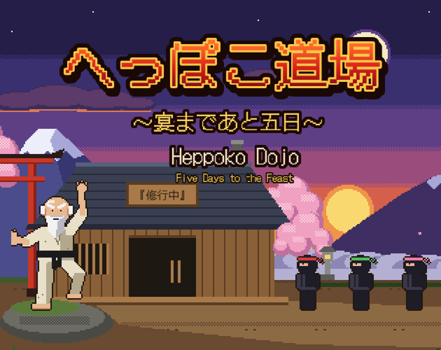

へっぽこ道場 ～うたげまであと五日～Heppoko Dojo: Five Days to the Feast
山奥の道場に「5日後のうたげで、すごいものを見せてほしい」という依頼が届きます。それが何なのか分からないまま、3人の弟子と5日間を過ごすゲームです。
A strange request arrives at a mountain dojo: show “something amazing” at a feast in five days. Nobody knows what that means. You have five days and three students to find out.
制作メモMy notes
生まれたきっかけHow it started
企業向けのアジャイル研修はワークショップを中心に行ってきました。ただ、「アジャイルの本質とは何か」といったパートになると、どうしても座学っぽくなってしまいます。そこをゲームの体験に置き換えられないかと、実験してみました。
My Agile training for companies has mostly been built around workshops. But parts like “what is Agile really about?” tend to turn into lectures. I wanted to see whether a game could replace those parts.
続きを読むRead more閉じるClose
ちなみに、体験してほしいのは次の3つです。
- ぐるぐると、ちょっとずつ進める
- 時間とリソースを固定し、その中で何をやるかを変える
- 正解が分からないときにはフィードバックから学ぶ
The game explores three ideas:
- Small steps and short feedback loops
- Fixed time and resources, with the scope allowed to change
- Learning from feedback when you don't know the answer in advance
研修での使い方In a workshop
考え方を説明したあとに体験として遊んでもらっても、先に遊んでもらってから説明につなげても使えます。遊んだあとは「どうでしたか？」とざっくり感想を聞くだけでも、どこまで伝わっているかが見えてきます。
You can explain the ideas first and let people experience them in the game, or have them play first and lead into the explanation. Afterwards, simply asking “How was it?” is often enough to see how much has landed.
見た目についてAbout the look
あえて少し粗い仕上がりにしています。動くものを早く見せて、反応から学ぶ。そんな感覚を体験しやすくするために、作り込みすぎないようにしています。
It's a little rough on purpose. Showing something that works early, and learning from the reaction, is easier to feel when things aren't over-polished.
作り直した話Starting over
最初の版では、教えたいことを全部入れようとして、両利きの経営の考え方まで盛り込むつもりでした。このままでは遊ぶ人にとって難しくなりすぎると思い、最初から作り直すことに。今度はコードを書く前に、AIとのチャットで文章だけのゲームとして遊び、ルールを確かめながら作ることにしました。意図したわけではありませんが、小さく試して反応から学ぶというこのゲームのテーマを、自分でも実践していたことになります。
The first version tried to fit in everything I wanted to teach, even organizational ambidexterity. It was going to be far too hard to play, so I started over from scratch. This time, before writing any code, I played it as a text-only game in a chat with AI, checking the rules as I went. I hadn't planned it, but I was living the game's own theme: try small, and learn from the reaction.
ゲームづくりの舞台裏はnoteに書いています。I wrote about how I made it on my Japanese blog.